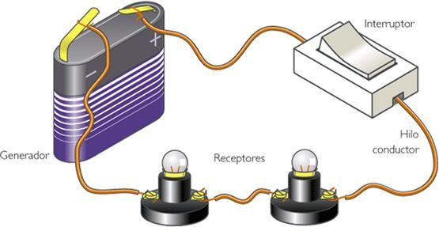
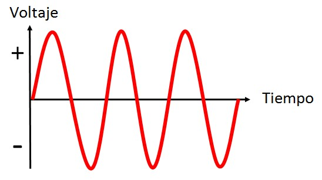
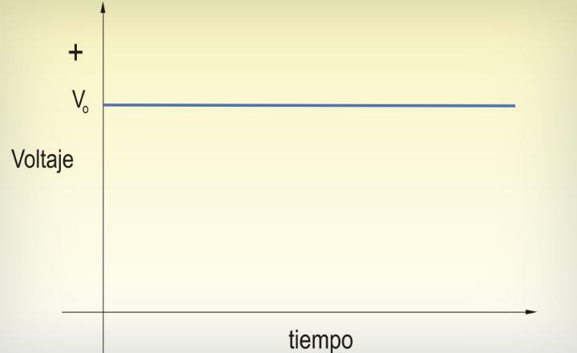
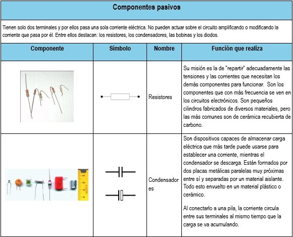
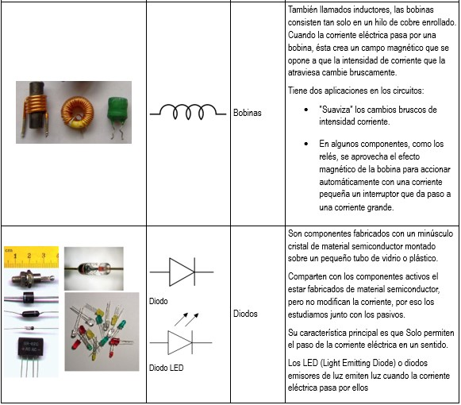

Es aquel tipo de corriente que varía en el tiempo. Llamándose así por tener mini ciclos positivos y mini ciclos negativos alternados. Este tipo de corriente es suministrada para el uso doméstico, por su fácil transmisión a grandes distancias y cantidades grandes.

Es el tipo de corriente continua en el tiempo y con misma polaridad invariable. Este tipo de corriente es el que se usa en aparatos electrónicos.

Un elemento pasivo es aquel que no es capaz de entregar potencia al circuito en el cual está conectado. Los elementos pasivos son: - Resistencia o resistor - Condensador o capacitor - Bobina o inductor - Diodo


Practica con componentes pasivos
Dentro de las características generales que tienen los elementos pasivos se encuentran: - Tienen un par de terminales. - No pueden ser subdivididos en otros elementos simples. - Tienen una relación única de voltaje y corriente en sus terminales la cual los caracterizan. - Son los elementos que absorben o consumen energía - La potencia es positiva.